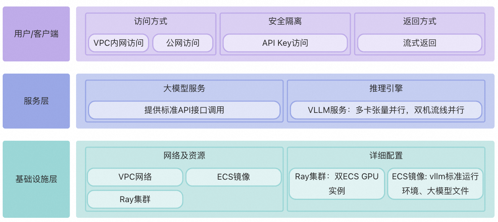
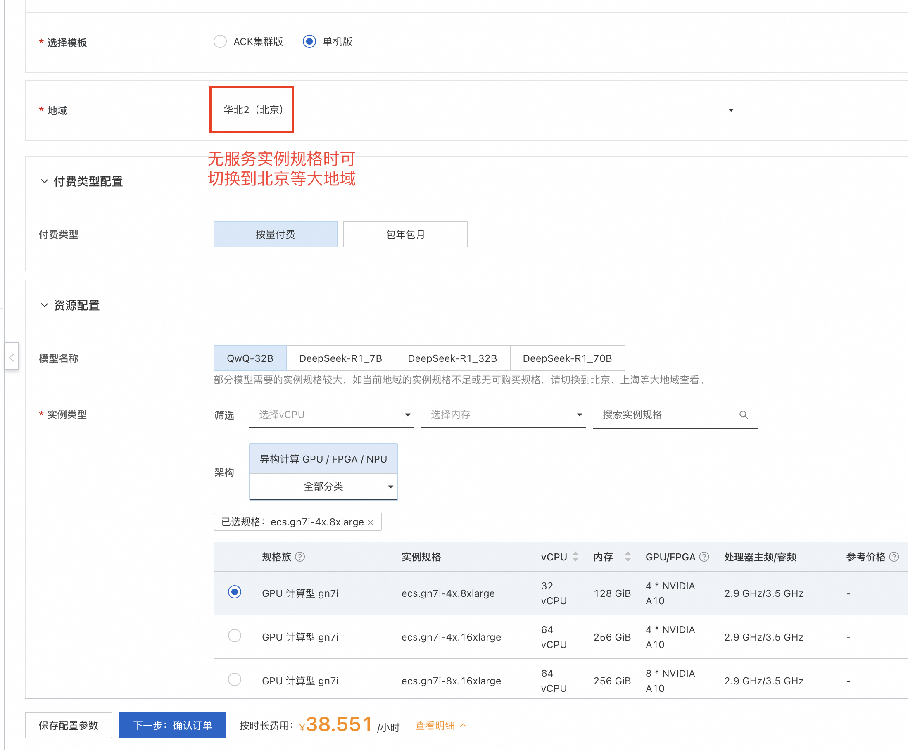
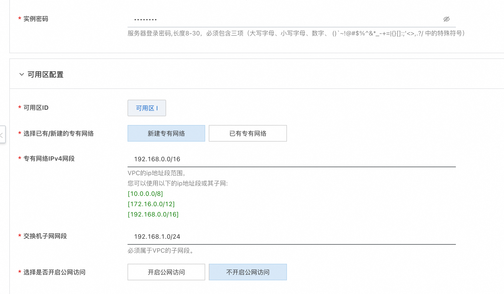
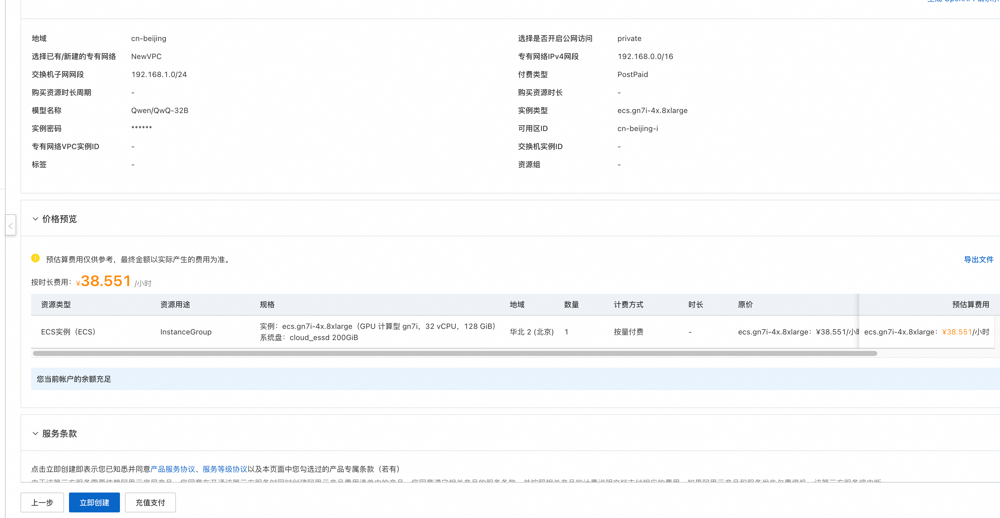
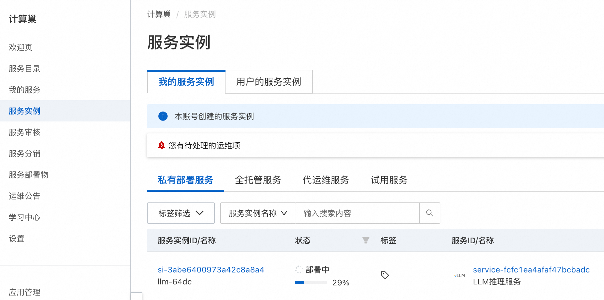
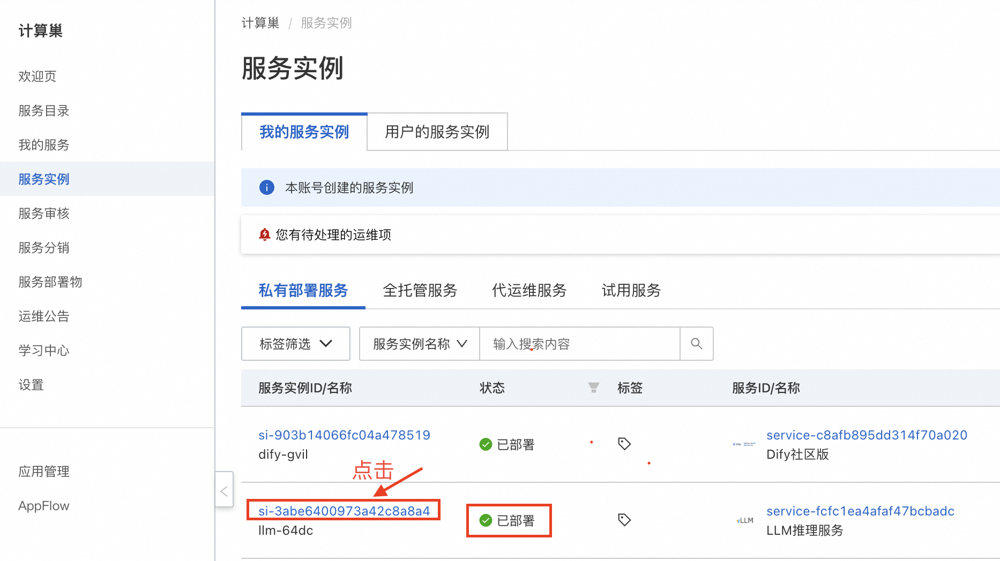
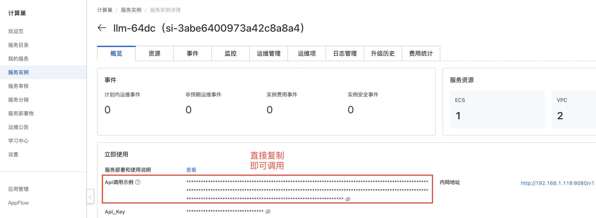
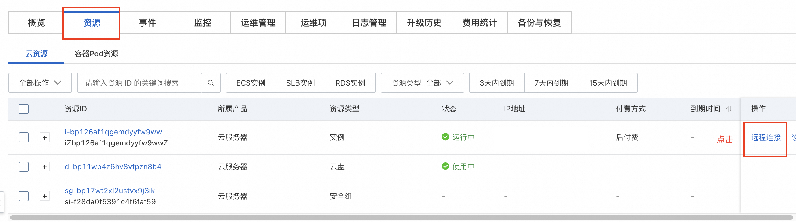
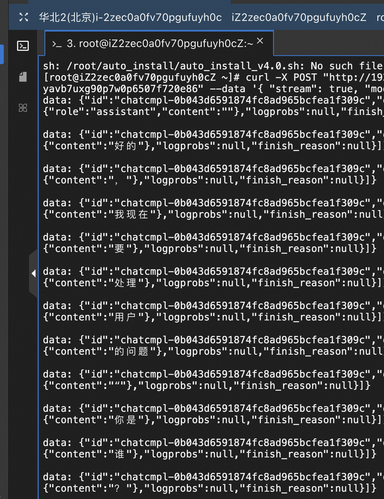
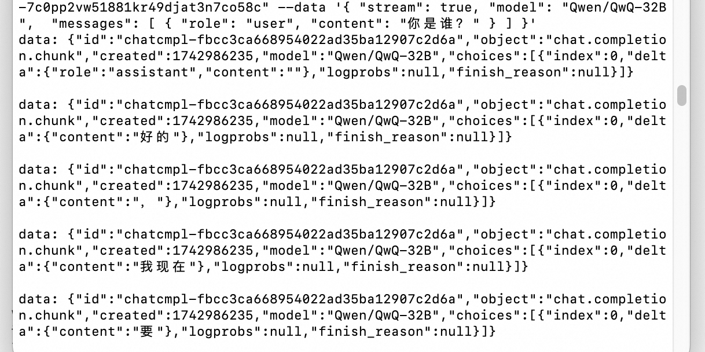

基于双ECS实例的DeepSeek-R1满血版和DeepSeek-V3模型部署文档
部署说明
本服务提供了基于ECS镜像与VLLM的大模型一键部署方案，30分钟内即可通过双Ecs实例部署使用DeepSeek-R1满血版和DeepSeek-V3模型。 本服务通过ECS镜像打包标准环境，通过Ros模版实现云资源与大模型的一键部署，开发者无需关心模型部署运行的标准环境与底层云资源编排，仅需添加几个参数即可享受DeepSeek-R1满血版和DeepSeek-V3的推理体验。
整体架构

计费说明
本服务在阿里云上的费用主要涉及： * 所选GPU云服务器的规格 * 节点数量 * 磁盘容量 * 公网带宽 计费方式：按量付费（小时）或包年包月 预估费用在创建实例时可实时看到。
RAM账号所需权限
部署服务实例，需要对部分阿里云资源进行访问和创建操作。因此您的账号需要包含如下资源的权限。
| 权限策略名称 | 备注 |
|---|---|
| AliyunECSFullAccess | 管理云服务器服务（ECS）的权限 |
| AliyunVPCFullAccess | 管理专有网络（VPC）的权限 |
| AliyunROSFullAccess | 管理资源编排服务（ROS）的权限 |
| AliyunComputeNestUserFullAccess | 管理计算巢服务（ComputeNest）的用户侧权限 |
部署流程
- 单击部署链接。根据界面提示填写参数，可根据需求选择是否开启公网，可以看到对应询价明细，确认参数后点击下一步：确认订单。


- 点击下一步：确认订单后可以看到价格预览，随后可点击立即部署，等待部署完成。(提示RAM权限不足时需要为子账号添加RAM权限)

- 等待部署完成后，就可以开始使用服务了。点击服务实例名称，进入服务实例详情，使用Api调用示例即可访问服务。如果是内网访问，需保证ECS实例在同一个VPC下。



使用说明
内网API访问
复制Api调用示例，在资源标签页的ECS实例中粘贴Api调用示例即可。也可在同一VPC内的其他ECS中访问。


公网API访问
复制Api调用示例，在本地终端中粘贴Api调用示例即可。

© 2009-2022 Aliyun.com 版权所有